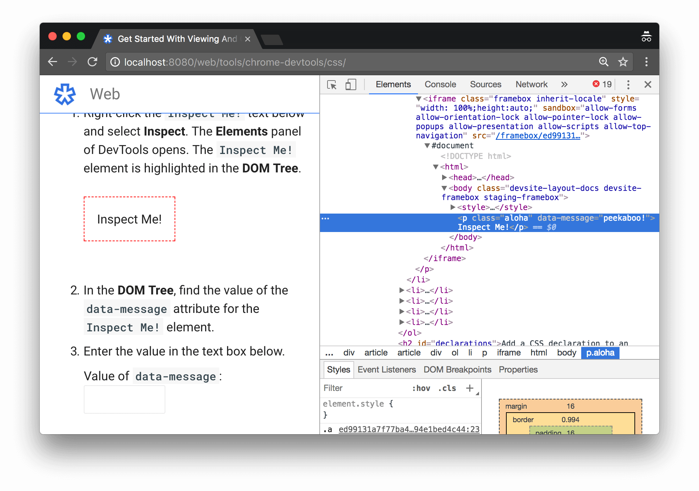
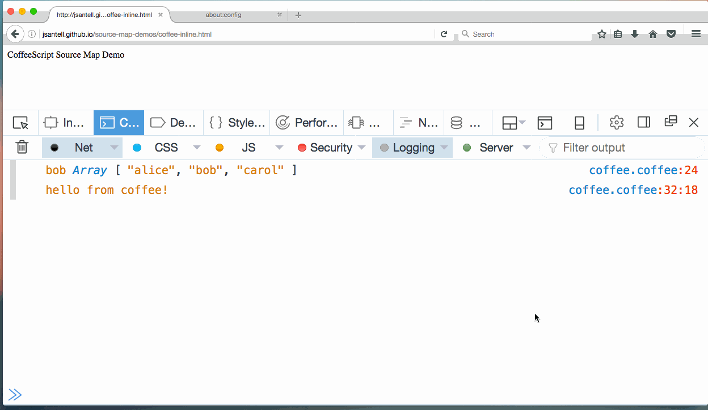

Elements
Como dito anteriormente, a aba Elements permite ao usuário e/ou desenvolvedor web, olhar como a página foi feita, ou seja, como cada elemento HTML foi específicado na hora do seu desenvolvimento, quando você estiver desenvolvendo páginas para web esta ferramenta será extremamente útil, pois com ela o você desenvolvedor poderá debugar a página para encontra possíveis divergiências
Como começar
- Windows
- Pressione as teclas CTRL + SHIFT + C
- MacBook
- pressione as teclas CMD + SHIFT + C
Ao fazer isso o DevTools será aberto no canto direito ou abaixo do seu monitor com a aba Elements ativida e ao passar o mouse sobre os componentes da página o DevTools irá mostrar todas as espicificações desta tag e/ou elemento
A imagem acima resume bem o poder desta ferramenta. Ao passar o mouse sobre o Inspect Me! (me inspecione) a aba elements deixa o cursor azul em cima da tag p (paragráfo).Podemos obsevar coisas interesantes, como exemplo este elemento possui em sua folha de estilo uma classe chamada aloha
Console
Permite o usuário e/ou desenvolvedor testar códigos predefinidos na página; também é possível debugar códigos JavaScript, sendo indispensável para qualquer desenvolvedor web.
Como começar
- Windows
- Pressione as teclas CTRL + SHIFT + J
- MacBook
- pressione as teclas CMD + SHIFT + J
Ao fazer isso o DevTools será aberto no canto direito ou abaixo do seu monitor com a aba Console ativada. Faça um teste, escreva e pressione a tecla Enter no Console "alert("Testando a aba Console")";
Após aprender a linguagem JavaScript, essa ferramenta será um ótimo ambiente de desenvolvimento integrado(IDE)